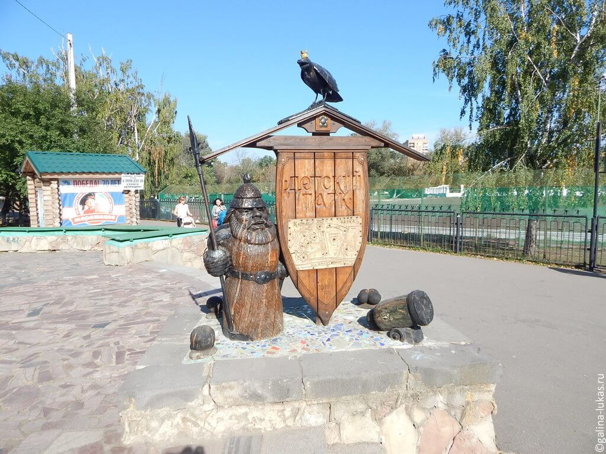
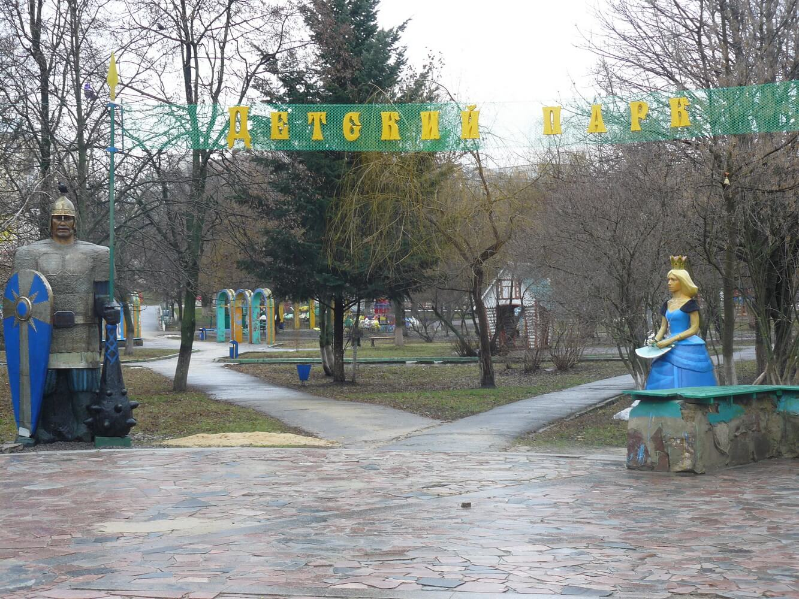
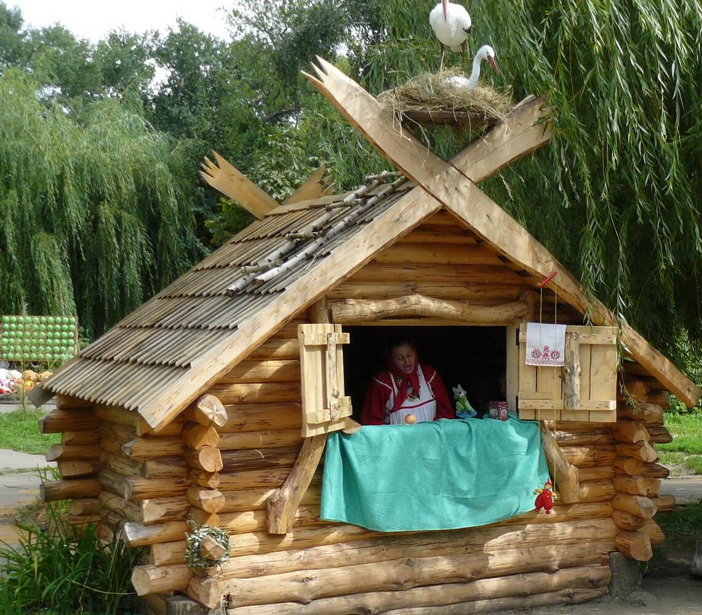
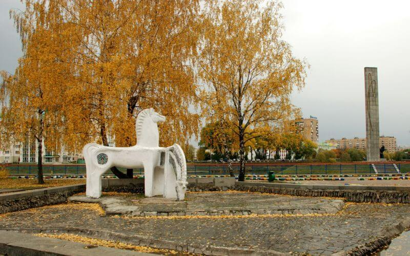
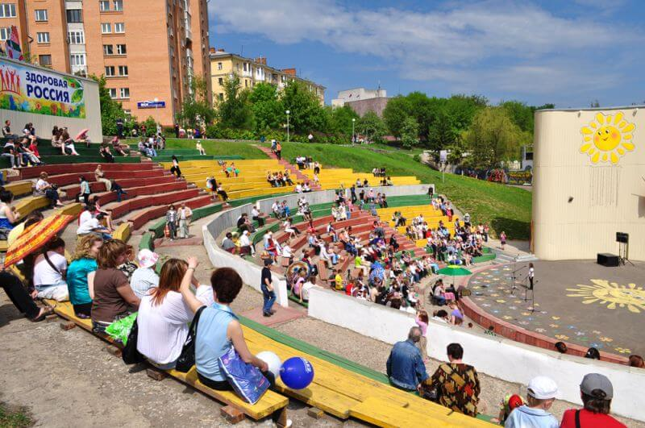
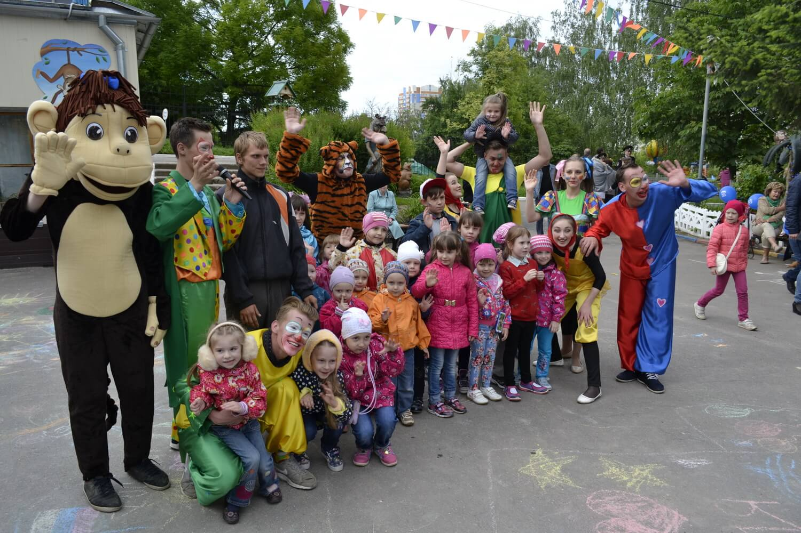

Детский парк находится на живописнейшем месте Орла у слияния двух рек Оки и Орлика. К сожалению, в городских архивах нет информации о дате создания детского парка, известно лишь, что ранее, в начале 1950-х годов, он располагался на правом берегу реки Орлик, а с конца 70-х годов прошлого века сооружения и эстрада были построены на левом берегу реки Орлик методом «народной стройки».

Орловский детский парк имеет на своей территории множество аттракционов, картодром, террариум, амфитеатр и площадку для отдыха. Амфитеатр является местом проведения культурных мероприятий для детей: концертов, танцев, конкурсов. Каждую субботу и воскресенье проходят детские часы, в рамках которых проводятся конкурсы рисунка на асфальте, викторины, загадки, игровые и конкурсные программы, конкурсы. Рядом с детским парком находится Городской парк культуры и отдыха.